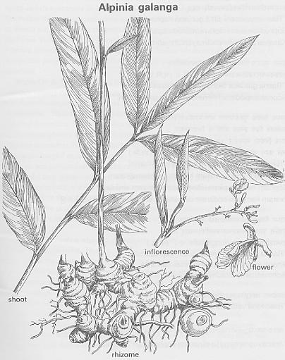

|
ECONOMICALLY
IMPORTANT PLANTS OF INDIA |
| Under-utilized Food and Fodder species and their wild relatives | Contributed by Ms.M.L Annapurna And Dr. Dhanapal, UAS, Bangalore |
Alpinia galanga
(L.) Willd

Correct Name
: Alpinia galanga ( L.) Willd
Family :zingiberaceae
Synonyms : Alpinia rheedi; Amomum
galanga; Languas galanga; Maranta galanga;
Common Names :
English: Greater Galangal.
Hindi: Kulinjan, Bara-kalijan, Barakulanjar,Greater galangal,Java galangal,Kalinjan,
Kulanjan, Kulinjan
Tamil: Arattai, Perarattai, Peraratthei, Perurattai
Kannada: Dhumarasmi, Raasmi, Doddarasagadde, Dumpa Rasmi,Dumpa rasmi, Dumparasmi,
Kallu shunti, Rasna,Sugandhamula,Sugandhavasi-gida
Sanskrit: Rasna, Elaparni, Barakulanjar, Kulanjan
Malayalam: Cittaratta, Pera-ratta, Aratta, Arattha, Kol-inji, Pera ratta,
Marathi: Kosht-Kulinjan, Koshtkulayan, Kulinjan
Telugu: Dumparastramu, Pedda dumpa , Rastrakam , Peddadumparashtram
Bengali: Barakulanjar, Kulanjan, Kulinjan
HABIT & HABITAT
A perennial rhizomatous herb, and is cultivated for its rhizome in tropical
areas of South and East India and is reported to occur in the eastern Himalayas
(Sikkim and Arunachal Pradesh) and the Western Ghats (Karnataka, Kerala and
Tamil Nadu). It is also cultivated at several places.
Cultivated,Cultivated fields and Plains.
BioticZone: Eastern Himalayas,Kanara,Konkan,none,South Konkan,SubHimalayan tracts,West
Coast,Western Ghats,
Availability
:
Misc: Sindhudurg and Wari Country,
Country: Ceylon, India, Malay Islands.
Zone: Central, East, North East, South and West,
State: Assam, Bihar, Karnataka, Kerala, Maharashtra, Tamil Nadu and West Bengal.
District: Dakshin Kannada, Palaghat, Sindhudurg and Uttar Kannada,
Taluk: Palghat and sawantwadi,
Status :
REPRODUCTIVE BIOLOGY
Breeding System :
Phenology:
At
some places in May-June and in some it flowers in April-May.
Pollinators :
Seed Biology:
Fruit is 1.25 cm long, oblong, constricted in middle or even pear shaped, three
sided and deep orange red in colour. Seeds are ash coloured, three angled, finely
striated towards the hilum. Both the seeds and rhizomes have the pungent aroma.
Seed Germination :
It is mainly propagated through the
root cuttings. And it is transplanted in the field at a spacing of 20 x 15 cm
and at a depth of 4 to 5 cm with the ball of soil intact. Rhizomes are planted
with at least one viable healthy sprout facing upwards. Two to three months
old, poly bag raised plants are transplanted. Initially the field is irrigated
thrice daily. Care should also be taken to weed and water regularly, but water
stagnation should be avoided. About 90 percent transplants establish.
Cultivation:
It can be propagated using vegetative means. Vegetative Propagation Through
Rhizome cuttings (Root slips): Best season for planting is just on the onset
of monsoon, after 4 or 5 pre-monsoon showers. Rhizome cuttings with at least
2 nodes are planted in raised beds (of rich loamy soil) of 1 to 2 m width and
25 cm high of convenient length with good tilth and drainage or in poly bags.
Deep planting is avoided. Sprouting occurs in 90 percent of cuttings.
Harvesting
Practices and yeild: Parts used Chemistry
MAJOR PESTS AND DISEASES
Economic Potential and Uses
Rhizomes and seeds
The rhizomes contain tannins and flavonoids, some of which have been identified
as kaempferide, galangin andalpin in, From roots, kaempferide, galangin
and alpinin were isolated. From green rhizomes, a pale yellow oil with a pleasant
odour can be obtained on distillation. This oil contains 48% methyl cinnamate,
20-30% cineole, camphor and probably apinene.
Other Uses
Economical
Potential to the country
Miscellaneous
Information
Literature